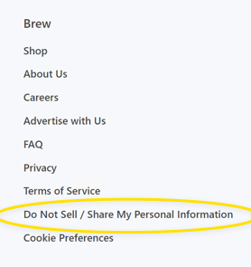
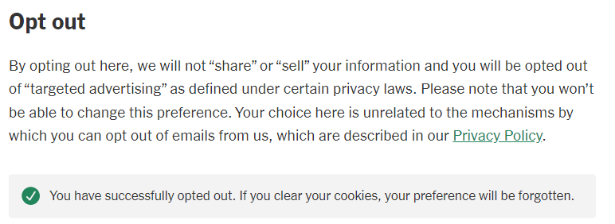

What businesses should do right now as California finally begins to enforce CCPA
1 “Realistic painting of a California brown bear with fangs in Yosemite, standing in profile on red stand.” Image generated through open-source packages.
California’s privacy watchdog finally has fangs. So where will it clamp down?
Years of court challenges prevented California’s privacy agency from enforcing its own regulations. That’s over. So what does the agency intend to bite down on first?
Here’s what we think businesses should focus on immediately for compliance with California consumer privacy law. (This alert is about CCPA, the privacy law enacted and amended by California voters in recent election—not the 1960s-era wiretapping statute known as CIPA. Read about CIPA mitigation strategies here.)
You can read about why we think these CCPA steps are crucial below. For more color, see the online version of this alert. It defines the shorthand in this summary, cites to authority and contextualizes several nuances and exceptions that may apply to your business.
Eliminate barriers to opt-out (‘do not share’) and delete requests.
- Just delete it. If a consumer asks your business to delete their information, do it. That includes requests routed through services like DeleteMe, which can serve as “authorized agents” under California law.
- Yes, California law allows a business to verify a consumer’s identity and an agent’s authority to act on a consumer’s behalf. But the watchdog’s first enforcement bulletin targets unnecessarily burdensome verification practices.
- For most businesses, it’s simpler and easier to presume deletion is appropriate, assuming a request can be matched to information the business maintains. Resort to verification only when there’s real doubt.
- Remember, no barriers to opt-out requests are allowed such as creation of an account. For requests to opt out of any ‘sharing’ or ‘sale’ or ‘limit’ the disclosure of sensitive info such as precise geolocation information asking for additional info in response is prohibited.
Make sure your tech supports—and honors—consumer preferences.
Skip this step if your business doesn’t “share”. It’s only relevant if your business passes information collected on your online service with others for targeted-ad purposes. The ad industry, and now the law, call that “sharing”.
- Implement GPC tech and a ‘Do Not Share’ homepage link. Affected businesses must implement Global Privacy Control (GPC) responsiveness and provide at least one other opt-out method. So turn off “sharing” for users sending GPC and other global opt-out signals.
- Your cookie banner or popup probably doesn’t count as a valid opt-out measure. Not only is it not required by US law, it may not satisfy California’s requirements. Out of the box, most cookie banners are designed with European privacy law in mind. Unless the banner describes and allows a one-click opt-out of sale and sharing—and not, for example, a multistep process with various cookie toggles—it’s probably not a valid method.
- Add the ‘Do Not Share’ homepage link. For the second opt-out method, a homepage footer link is the smart choice. We recommend the standard ‘Do No Sell or Share My” info link, which visually signals to consumers and regulators that your business has taken steps to comply with California privacy law. Clicking the link should turn off all ‘sharing’ of data from the visitor for targeted-ad purposes. Here’s an example:

The ‘Do Not Sell’ footer link on Morning Brew.
- Sensitive data opt-outs. This is less common. But, if you ever disclose “sensitive” information to outsiders who don’t need it to provide the services users request, clicking the link must also turns off those disclosures.
- For most businesses, a tangible example is allowing video-player software to receive users’ precise (GPS) locations. GPS coordinates, unlike a physical address, are sensitive. Your business may need your customer’s exact location to route a courier to their location. The video player doesn’t need GPS coordinates; at most, a general location would probably suffice.
Screen capture of NYTimes.com after clicking ‘opt-out’ button.
Update stale privacy policies.
If your privacy policy hasn’t been updated in the last 18 months, it’s probably out of date.
- Consumer privacy laws in other states have gone into effect in the last few years. If your policy doesn’t extend privacy rights to residents in those states, it’s stale.
- No other state gives consumers all the rights California does. All states extend most of them. For most business, treating all U.S. users as California residents is the easiest, most efficient approach. If you have any questions regarding compliance with numerous state laws, please consult a privacy attorney
- Read your policy, even if it’s relatively recent. Does it accurately describe the types of info you collect, how you use that data and what you disclose to outside businesses? More importantly, would a consumer understand those descriptions? If you can’t, a consumer probably can’t either. The watchdog’s regulations see vague and jargon-heavy descriptions as problematic.
Gauge your risk profile
Expect targeted ads to remain in the regulatory crosshairs:
- California’s first big enforcement push in 2022 focused on whether online businesses were honoring global signals, namely GPC. We expect the watchdog to pursue them just as much.
- Why? Global signals shift the opt-out burden from the consumer to businesses, in a move praised by privacy advocates. Instead of manually clicking the ‘Do Not Share’ option on every single website, a user with a global setting sends that opt-out request automatically just by visiting a webpage.
- In 2022, Sephora became the poster child for noncompliance. Other e-commerce websites were targeted too, but escaped public fines by curing their noncompliance within 30 days. That grace period no longer exists for actions by the watchdog.
Industry focuses:
- The watchdog has also publicly stated that it’s focused on car companies and data collection from vehicles, just like many other regulatory bodies. Make compliance a high priority if your business obtains data collected by consumer vehicles or other sensors (like security cameras and other ‘smart’ devices).
>Why take these steps?Although the regulatory climate for California is a complex one, given the relatively recent regulations and the fact that the watchdog has not taken significant enforcement actions, our hunches regarding the priorities of the watchdog are grounded in the agency’s guidance and public statements, as well as California privacy law and regulations, which contain more than 50,000 words.
Our recommendations also reflect the watchdog’s guidance “Applying Data Minimization to Consumer Requests” published April 2, 2024. Despite the title, the guidance (1) emphasizes certain concrete actions in addition to (2) restates general, abstract principles without new commentary. Here’s what its 2,400 words boil down to:
Concrete actions:
- Actioning consumer requests:
- Regulation section 7060(d) outlines that businesses should generally avoid requesting additional information for verification purposes unless necessary, and must delete any new information collected for verification as soon as practicable after processing the consumer’s request.
- Regulation section 7025(c)(2) stipulates that businesses should not require additional information beyond what is necessary to send an opt-out preference signal.
- Under regulation section 7026(c), businesses must not require consumers to create an account or provide unnecessary information for requests to opt out of sale/sharing.
- According to regulation section 7027(d), businesses must not ask for extra information when a consumer submits a request to limit the use or disclosure of sensitive information.
- Preventative measures:
- Businesses are reminded to specifically address possible negative impacts on consumers through additional safeguards such as encryption or automatic deletion.
General principles:
- The foundational principle of data minimization in the CCPA is that businesses collect information only to the extent necessary for the purposes for which it is collected. Businesses must apply the data minimization principle for each purpose for which they collect, use, retain, and share information.
- Use of a consumer’s information must be reasonably necessary and proportionate to the purposes described at collection.